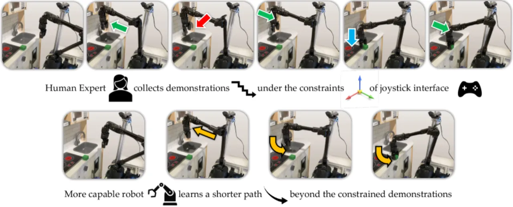
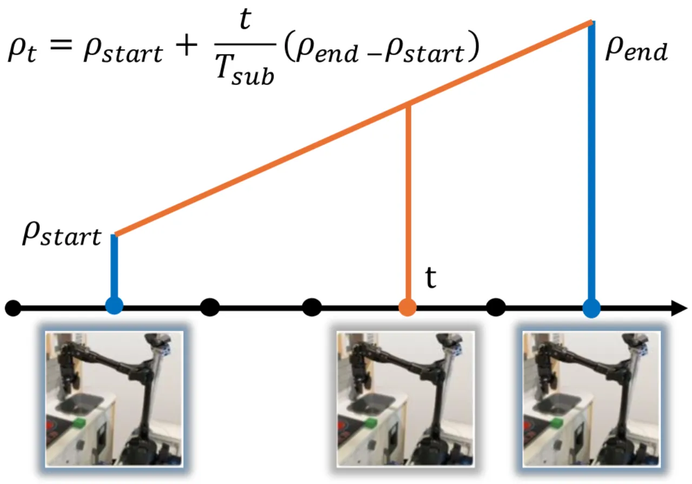
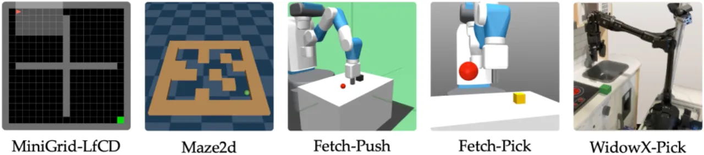
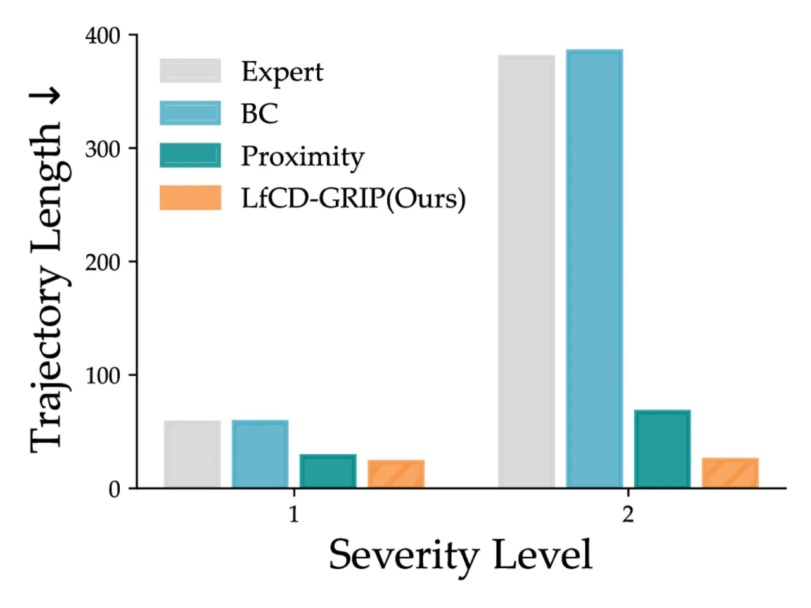
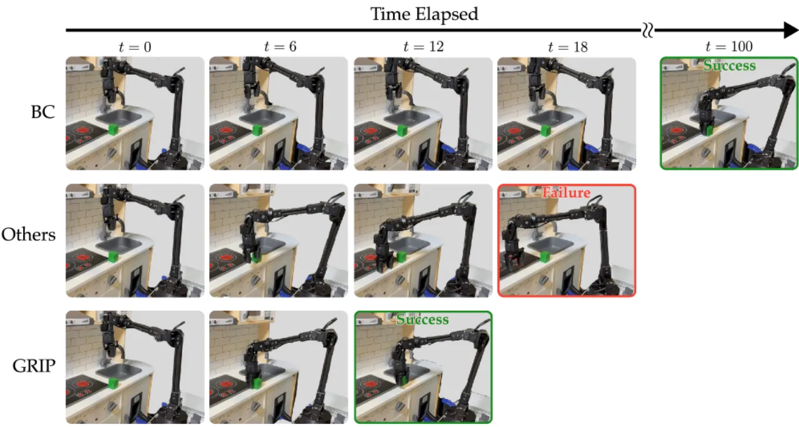

人用手柄、动觉示教等受限接口采集的演示往往次优——受限于间接控制、硬件安全与自由度限制，只能给出缓慢、分段的轨迹。本文提出 LfCD-GRIP：不去直接模仿受限动作，而是从演示中推断一个只依赖状态的 goal-proximity 奖励，并用时序插值为未知状态自标注奖励，让 agent 在约束解除后探索更短更高效的轨迹。真机 WidowX 抓取任务上 12 秒完成，比 behavioral cloning 快 10 倍。
Learning from demonstration 让专家能通过 kinesthetic teaching、joystick、sim-to-real 等接口教机器人。但这些接口本身会约束专家：例如 mode-switching joystick 一次只能控制一个轴，即使机械臂本身能在更高维空间协同运动。结果是演示轨迹缓慢、分段，学出来的策略自然次优。既有 imitation learning（BC/GAIL）以模仿专家动作为目标，会把这些人为约束一起学进去，无法超越演示者。
“Can an agent learn from constrained demonstrations and discover more efficient behaviors once those constraints are lifted?” —— 即，机器人能否学出比受限专家更好的策略。

LfCD-GRIP（Learning from Constrained Demonstrations with Goal-proximity Reward InterPolation）是一个 IRL 框架：把奖励学习与专家的受限动作解耦，只从状态推断"离目标有多近"，再用 agent 在线探索到的数据把这种"任务进度"信号插值扩展到演示之外，最后用 PPO 在该奖励上训练策略。
训练一个只吃状态的 goal-proximity 函数 fφ(s)：越接近目标的状态被赋予越高的 proximity 值，通过对专家轨迹做指数时序衰减标注得到。奖励定义为相邻状态的 proximity 增量——R̂prox(st, st+1) = fφ(st+1) − fφ(st)。因为奖励不依赖动作，agent 不必复刻受限动作，只要朝目标推进就得到奖励，从而可以走演示里没出现过的捷径。
Agent 在线采集的样本大多落在专家分布之外，直接外推 proximity 不可靠。论文用 Monte Carlo Dropout (MCD)：推理时开启 dropout、多次随机前向，用预测方差衡量不确定性——"lower variance indicating higher confidence"。置信阈值动态设为专家状态上观察到的最大 proximity 方差；低方差（高置信）的状态被当作 anchor。
对于两端都是高置信 anchor 的子轨迹，中间状态用对数尺度线性插值得到 proximity 目标：ρt = ρstart + (t/Tsub)(ρend − ρstart)。这样就把"任务进度"的概念沿 agent 自己的轨迹传播到约束之外的未知状态。训练中用一个逐步退火的 masking 概率，慢慢增加对插值值的依赖。

总损失由三部分组成：ℒφGRIP = ℒφe + ℒφconf + ℒφunconf（专家项 + 置信项 + 非置信/插值项）。为估计不确定性，proximity 网络维护一个 5 个成员的 ensemble。
环境：MiniGrid-LfCD（离散导航）、Maze2D（连续 2D 导航）、FetchPick / FetchPush（3D 操作）、WidowX-Pick（仿真 + 真机）。Baselines：Behavioral Cloning (BC)、GAIL、GAIfO、SSRR、Proximity-based IRL，以及去掉插值的消融 Proximity(-Drop)。除 BC 外均用 PPO 训练。

衡量各方法选择"落在专家动作空间之外"动作的比例，检验是否真的超越了约束。LfCD-GRIP 在 100% 使用越界动作的同时达到 100% 成功率；GAIfO 虽然 100% 越界却学不出高成功率，说明关键在奖励泛化而非单纯动作多样性。
| Baseline | Success Rate | OOC Action Ratio |
|---|---|---|
| GAIL | 69% | 71% |
| BC | 12% | 69% |
| GAIfO | 51% | 100% |
| LfCD-GRIP (Ours) | 100% | 100% |
Table 1：Success rate and OOC action ratio in Maze2D-Constrained（数值逐字摘自原文）。
在 MiniGrid-LfCD 中，LfCD-GRIP 发现了演示里没有的对角线捷径，而所有 baseline 都被限制在演示的横竖（cardinal-direction）路径上。在 Maze2D-Constrained 中，"LfCD-GRIP completes the task in 100 transitions on average—reducing episode length by over 10% compared to Proximity-based IRL, which requires 113 transitions."（100 vs 113 transitions，缩短 >10%）。

用 ManiSkill 采集 550 条专家演示预训练，再 sim-to-real 迁移到真实 WidowX 250s。仿真中"Only BC and LfCD-GRIP succeed, with LfCD-GRIP being more efficient"。真机上：BC 能复现专家行为但无法利用完整动作空间、执行缓慢，每次需 100 秒；相比之下 LfCD-GRIP 生成高效轨迹，"completes the task 10x faster, in just 12 seconds."

原文："Proximity-based reward assumes that task progress can be measured with respect to a specific goal state. While well suited for goal-reaching tasks, this limits applicability to settings without clearly defined terminal conditions." —— proximity 奖励假设任务进度可相对某个目标状态度量，因此适合 goal-reaching，但难以用于没有清晰终止条件的任务。
当前依赖为每条演示量身定制的 goal-conditioned proximity estimates，在多任务场景下泛化困难。作者提出未来借助 representation learning 让进度信号能跨语义各异的目标泛化。
方法依赖 MC-Dropout 方差作为置信度、并以专家状态上的最大方差作动态阈值，同时用对数线性插值假定子轨迹内进度平滑单调。当在线探索质量差、anchor 稀疏或进度非单调时，插值的自标注奖励可能失真——此为据设计推断，非原文明述。